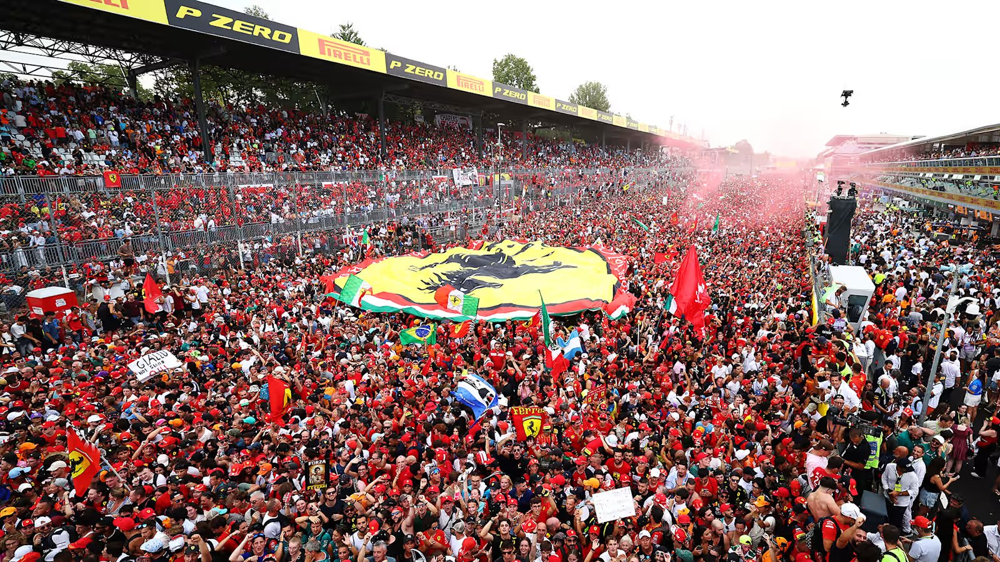

Sports · Motorsport
Formula 1 Pirelli Gran Premio d'Italia 2027
- Dates
- –
- Venue
- Autodromo Nazionale Monza
- Location
- Monza, Italy
- Format
- In-person
- Category
- Motorsport
- Industry
- Motorsport
- Organiser
- Formula One World Championship Limited
- Official website
- https://www.formula1.com/en/racing/2027/italy
About
Dates are local civil dates for the official race weekend in Italy. Official 2027 FIA Formula One World Championship calendar published on formula1.com and announced by the FIA/WMSC on 16 Sep 2026.
Topics: Formula 1, Grand Prix, circuit racing.
No organiser attendance figure found on the official pages fetched 24 Nov 2026 for this upcoming edition. Ranked by our estimated size tier 'very large' (100,000+ attendees/visits), a judgement from format, venue and scale, not an official number.